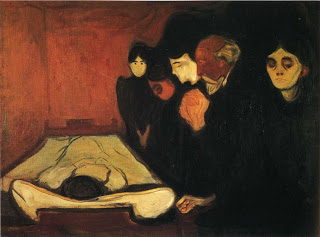

Bava Batra 115 - Order of Inheritance: Depth-First

"... if a man should die, and he has no sons, you shall transfer his inheritance to his daughter. " - A son takes precedence over a daughter. Moreover, all the descendants of a son take precedence over a daughter.
However, a daughter takes precedence over the brothers of the deceased (her uncles), and the descendants of a daughter take precedence over brothers. The daughter also takes precedence over the father of the deceased (her grandfather).
This is the rule: whoever takes precedence in the inheritance, his descendants too take precedence; and the father takes precedence over all his descendants - because the brothers of the deceased are related to him through their common father.
Art: Edvard Munch - By the Deathbed